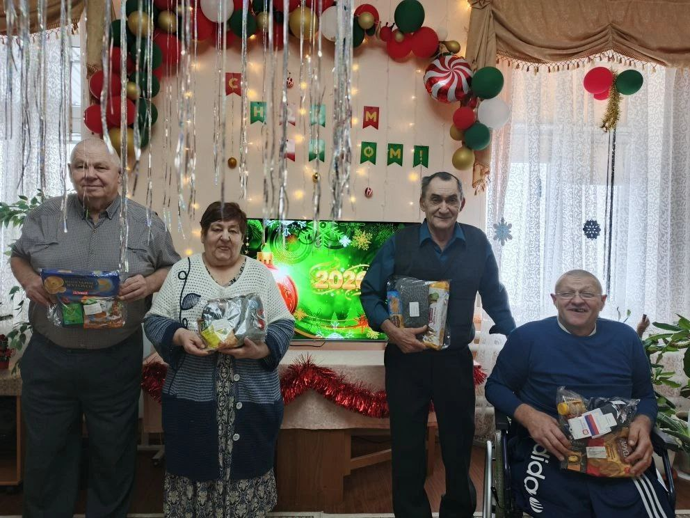

В преддверии Нового года учащиеся, педагоги и родители
ГБОУ Школы № 2051 объединились, чтобы подарить частичку тепла и заботы жителям дома престарелых.
Совместными усилиями были собраны новогодние подарки, наполненные вниманием, добрыми пожеланиями и искренней заботой.
Эта акция стала напоминанием о том, как важно в праздничные дни быть рядом с теми, кому особенно нужны поддержка и человеческое участие.
Подаренные улыбки и тёплые слова сделали Новый год немного светлее и добрее.
Тепло начинается с заботы.
Каждый добрый поступок, улыбка и внимание делают мир светлее.
Наши встречи с людьми старшего поколения — это не только помощь, но и бесценные уроки доброты, уважения и благодарности.
Мы верим, что даже маленькое дело может подарить большое тепло и радость
📍 Место сбора:
[территория школы / школьный двор / центральный вход в школу]
🕘 Время и даты проведения:
[указать]